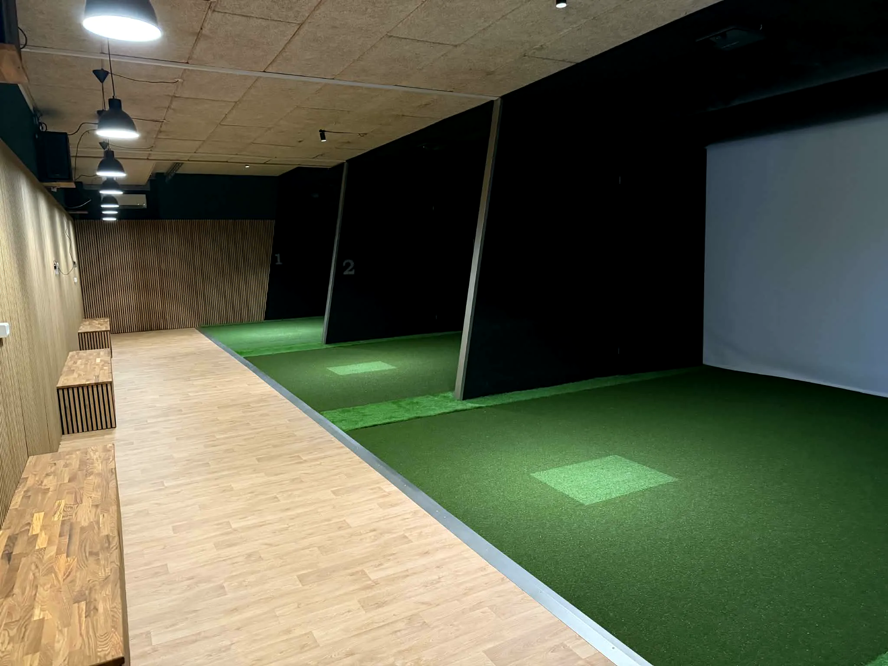
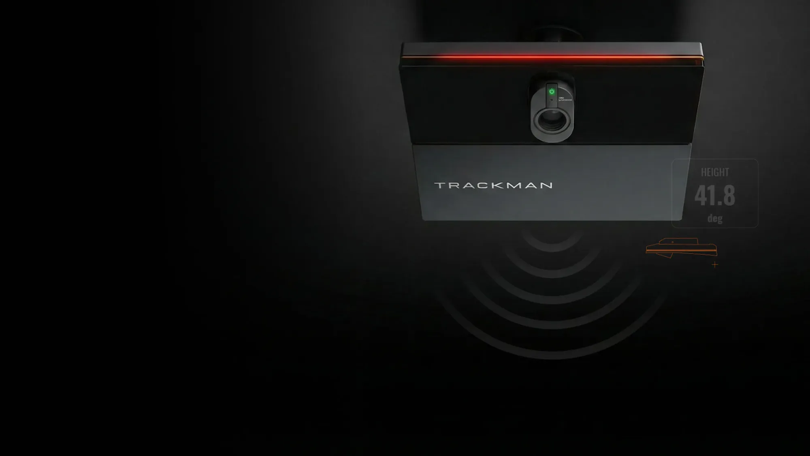
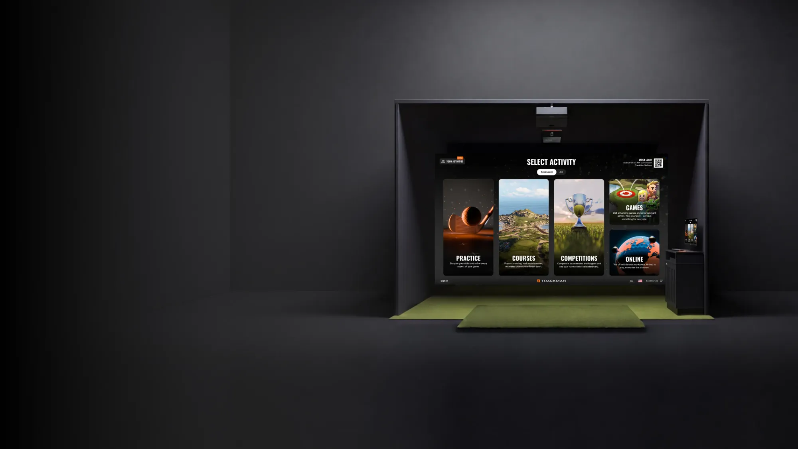
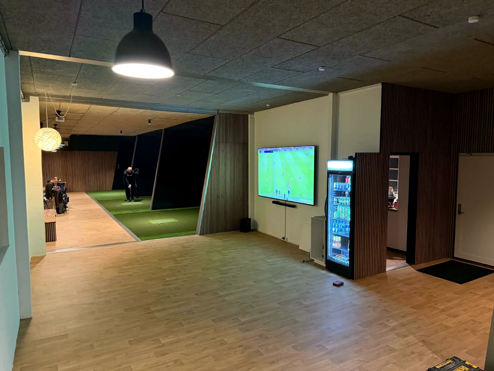
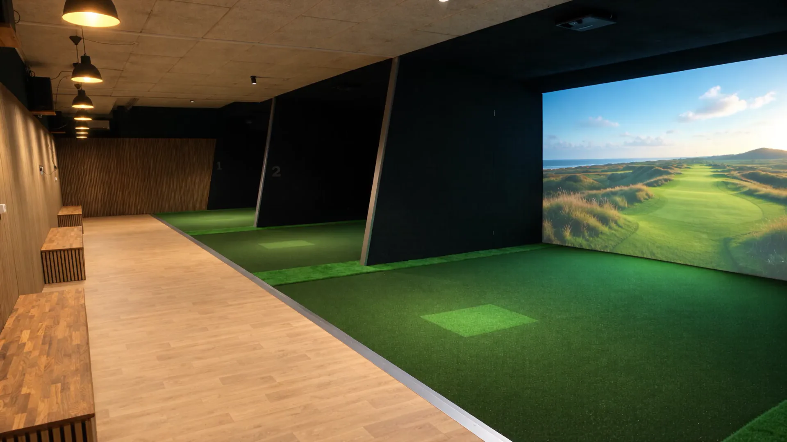
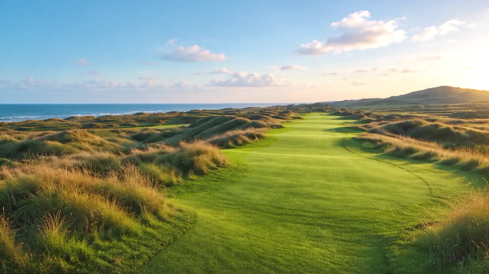
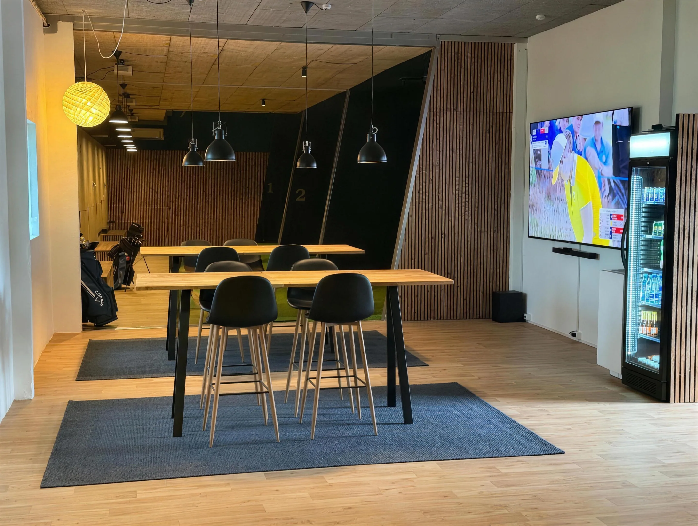
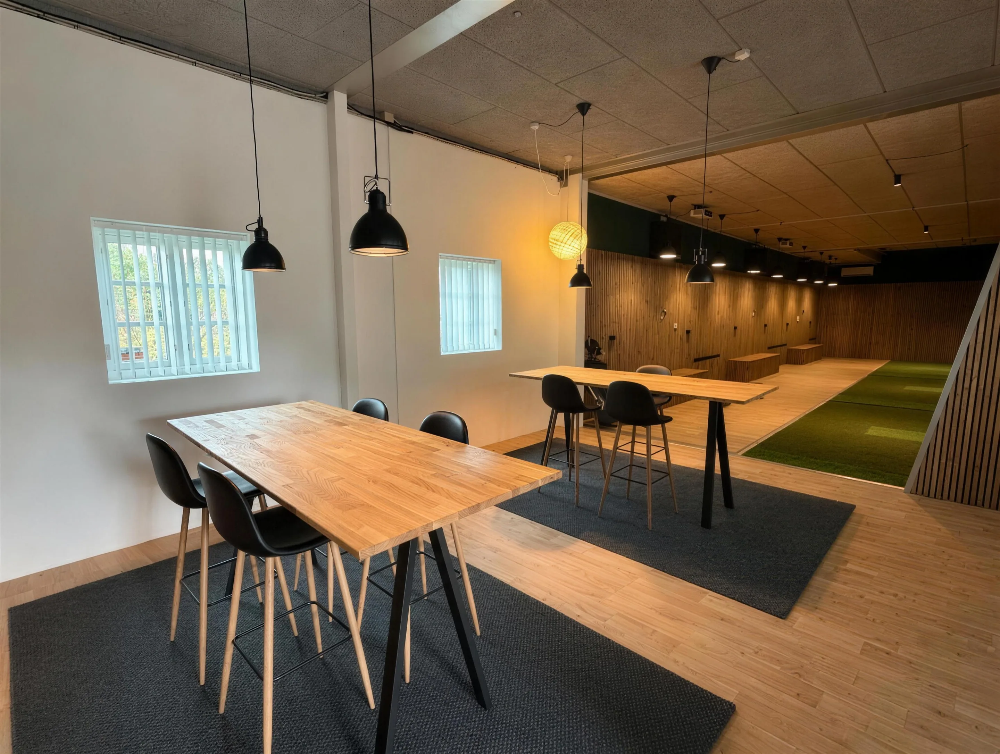

Fire simulatorer
Plads til en hel flight ved hver simulator, og bænke langs væggen til tasker og venner.

Book en bane
Fire Trackman iO-golfsimulatorer og en lounge til hele holdet. Lige uden for Ribe.
Book en baneKunstgræs, slagmåtte og en skærm fra væg til væg. Fire gange.

Plads til en hel flight ved hver simulator, og bænke langs væggen til tasker og venner.

Bygget til indendørs golf. Måler bold og kølle, inklusiv 3D-spin og spinakse.
Foto: Trackman
Træning, rigtige baner, konkurrencer og spil. Vælg på skærmen og sving.
Foto: Trackman
Én spiller eller seks. Skift tur, hold point og hyg imellem slagene.
Tag jeres eget golfsæt med.
Book en baneOplev vores simulator.


Spil på baner fra hele verden.
Vælg en bane i Trackmans bibliotek, og spil hele runden uden at fryse.
Næste destination
Links ved kanten af Norskehavet, med sneklædte tinder på den anden side af vandet.
Stemningsbilleder. Banerne spilles i Trackman Virtual Golf.

Højborde, storskærm og et køleskab med koldt. WoodUpp-panelerne gør rummet varmt, og der er altid plads til én runde mere.
Medlemskab
Spil så tit I vil, også klokken seks en søndag morgen. Medlemmer er med i månedsturneringen.
[PRIS] kr. / md.
Book en bane
Én gang om måneden spiller medlemmerne om æren. Alle niveauer kan være med.
Hvem lægger bolden tættest på flaget? Vores klassiker, også til åbent hus.
Teambuilding med konkurrence, lounge og noget koldt bagefter.
Book en eller flere simulatorer, og gør dagen til en turnering.
Ja, tag jeres eget golfsæt med. Tees kan købes i loungen for 1 kr. stykket.
Ja. Alle niveauer kan være med. Trackman viser jeres slag med tal og banekurve, så I kan se præcis, hvad der sker, og spille træning, spil eller hele baner i jeres eget tempo.
Fra én til seks spillere pr. simulator. I skiftes til at slå, og Trackman holder styr på pointene. Til større grupper kan I booke flere simulatorer eller hele hallen.
Som medlem får I jeres egen kode til døren, så I kan spille hele døgnet, hver dag. Medlemmer er også med i månedsturneringen.
Hele Trackman Virtual Golf-biblioteket, blandt andet St Andrews Old Course, Pebble Beach, Royal County Down og Lofoten Links.
Ja. Book flere simulatorer eller hele hallen til teambuilding, polterabend eller fødselsdag. Vi sætter gerne en konkurrence op, og loungen er klar bagefter. Pris efter aftale.
På Haderslevvej 65, 6760 Ribe. Omkring en halv times kørsel fra Esbjerg.
Bolden ligger 0,4 m fra pinden.
Skriv til os om booking, medlemskab eller et arrangement. Vi vender tilbage hurtigst muligt.